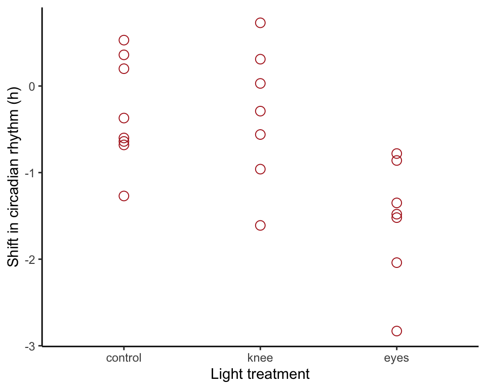
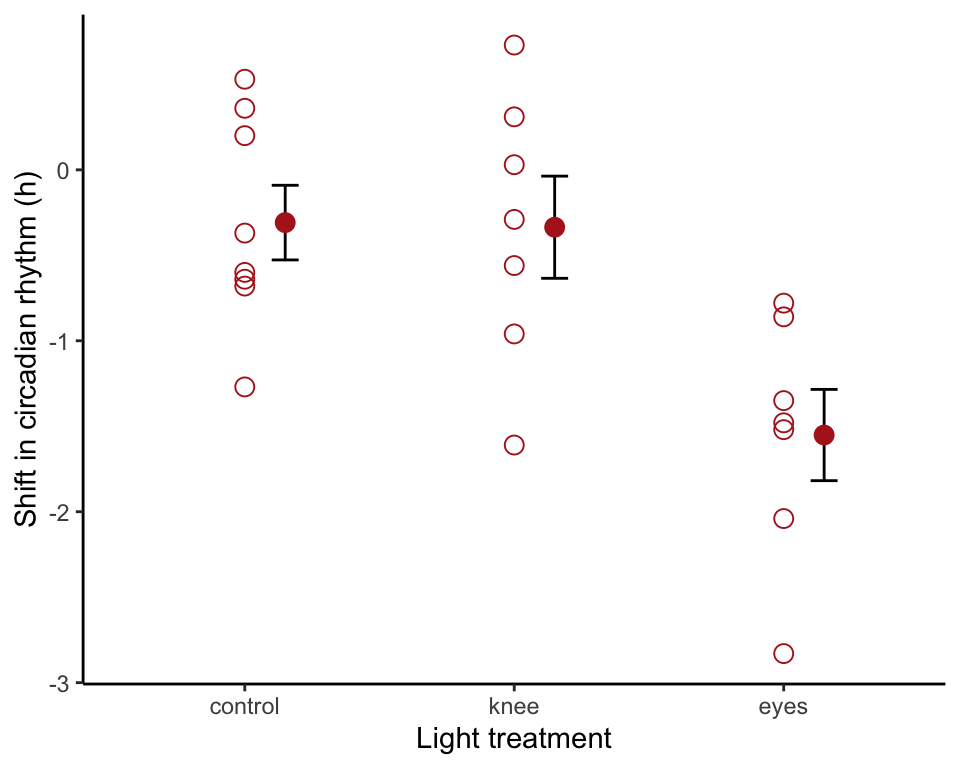
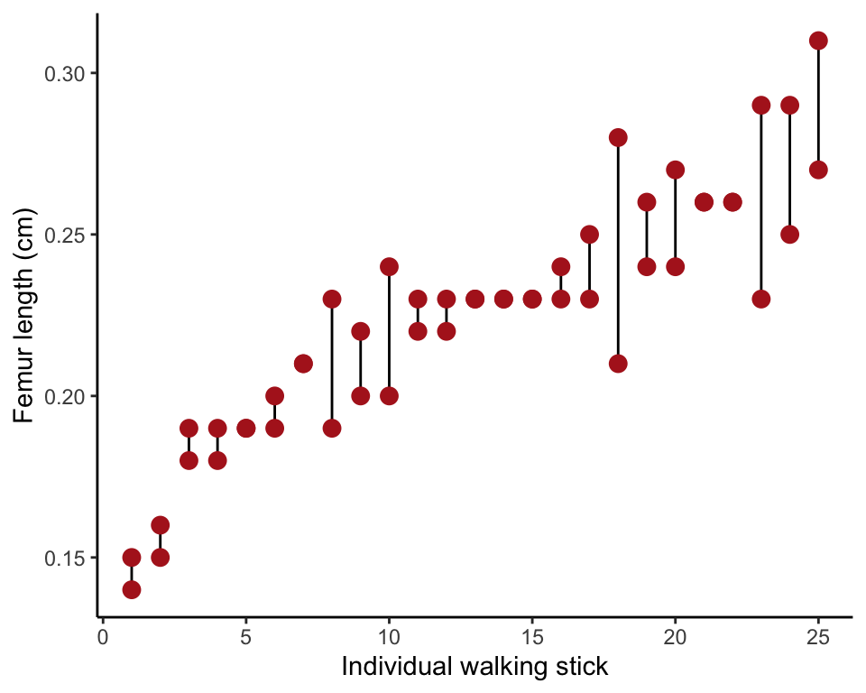

R code for example in Chapter 15:
Comparing means of more than two groups
We used R to analyze all examples in Chapter 15. We put the code here so that you can too.
Also see our lab on ANOVA using R.
New methods on this page
-
Fixed effects analysis of variance (ANOVA):
circadianAnova <- lm(shift ~ treatment, data = circadian) anova(circadianAnova) -
Unplanned comparisons (Tukey-Kramer tests) using the
multcomppackage:circadianPairs <- emmeans(circadianAnova, "treatment") contrast(circadianPairs, method = "pairwise", adjust = "tukey") -
Kruskal-Wallis test:
kruskal.test(shift ~ treatment, data = circadian) -
Other new methods:
- R2.
- Planned comparisons.
- Random effects analysis of variance.
- Repeatability.
Load required packages
We need the emmeans package to carry out pairwise comparisons of group means in addition to the ggplot2 and dplyr packages. We also need the nlme package to carry out ANOVA with a random effect. You might need to install the emmeans package on your computer if you have not already done so.
install.packages("emmeans", dependencies = TRUE) # only if not yet installedlibrary(ggplot2)
library(dplyr)
library(nlme)
library(emmeans)Example 15.1. Knees who say night
Analysis of variance, comparing phase shift in the circadian rhythm of melatonin production in participants given alternative light treatments. Also, the nonparametric Kruskal-Wallis test. Finally, we use the same data to demonstrate planned comparisons and unplanned comparisons (Tukey-Kramer tests).
Read and inspect data
circadian <- read.csv(url("https://whitlockschluter3e.zoology.ubc.ca/Data/chapter15/chap15e1KneesWhoSayNight.csv"), stringsAsFactors = FALSE)Order groups
circadian$treatment <- factor(circadian$treatment,
levels = c("control", "knee", "eyes")) Statistics by treatment group
Here is how to create a table of descriptive statistics of a variable by group (Table 15.1-1) using summarize() from the dplyr package.
circadianStats <- summarize(group_by(circadian, treatment),
Ybar = mean(shift, na.rm = TRUE),
s = sd(shift, na.rm = TRUE),
n = n())
data.frame(circadianStats)## treatment Ybar s n
## 1 control -0.3087500 0.6175629 8
## 2 knee -0.3357143 0.7908193 7
## 3 eyes -1.5514286 0.7063151 7Basic strip chart
The basic strip chart is as follows.
ggplot(circadian, aes(x = treatment, y = shift)) +
geom_point(color = "firebrick", size = 3, shape = 1) +
labs(x = "Light treatment", y = "Shift in circadian rhythm (h)") +
theme_classic()
Standard error bars
Use stat_summary() to overlay mean and standard error bars. We shifted the position of the bars to eliminate overlap.
ggplot(circadian, aes(x = treatment, y = shift)) +
geom_point(color = "firebrick", size = 3, shape = 1) +
stat_summary(fun.data = mean_se, geom = "errorbar",
colour = "black", width = 0.1,
position=position_nudge(x = 0.15)) +
stat_summary(fun.y = mean, geom = "point",
colour = "firebrick", size = 3,
position=position_nudge(x = 0.15)) +
labs(x = "Light treatment", y = "Shift in circadian rhythm (h)") +
theme_classic()
Fixed effects ANOVA table
The ANOVA table is made in two steps. The first step involves fitting the ANOVA model to the data using lm() (“lm” stands for “linear model”, of which ANOVA is one type). Then we use the command anova() to assemble the table. The result will look similar to that in Table 15.1-2, although the columns are arranged slightly differently.
circadianAnova <- lm(shift ~ treatment, data = circadian)
anova(circadianAnova)## Analysis of Variance Table
##
## Response: shift
## Df Sum Sq Mean Sq F value Pr(>F)
## treatment 2 7.2245 3.6122 7.2894 0.004472 **
## Residuals 19 9.4153 0.4955
## ---
## Signif. codes: 0 '***' 0.001 '**' 0.01 '*' 0.05 '.' 0.1 ' ' 1\(R^2\)
\(R^2\) indicates the fraction of variation in the response variable “explained” by treatment. This is again done in two steps. The first step calculates a bunch of useful quantities from the ANOVA model object previously created with a lm() command. The second step shows the \(R^2\) value.
circadianAnovaSummary <- summary(circadianAnova)
circadianAnovaSummary$r.squared## [1] 0.4341684Kruskal-Wallis test
The Kruskal-Wallis test is a nonparametric method to compare more than two groups. The method is not needed for the circadian rhythm data, because assumptions of ANOVA are met, but we include it here to demonstrate the method. Write the formula for the command in the same way as with lm().
kruskal.test(shift ~ treatment, data = circadian)##
## Kruskal-Wallis rank sum test
##
## data: shift by treatment
## Kruskal-Wallis chi-squared = 9.4231, df = 2, p-value = 0.008991Planned and unplanned comparisons
Planned and unplanned comparisons of pairs of means.
A planned comparison is a comparison between two group means that was planned during the design of the study, in other words well before the data were collected. To use the method you need a solid prior justification—why are you focusing on that specific pair of treatments? Only a small number of planned comparisons are allowed.
If you lack a solid prior justification for a specific comparison between two groups, use unplanned comparison instead. Unplanned comparisons typically involve testing differences between all pairs of means, and methods provide needed protection against rising Type I errors that would otherwise result from multiple testing. We use the Tukey method for unplanned comparisons.
A planned comparison
Here we’ll calculate a planned comparison. The only one we are interested in is that between the “control” and “knee” treatment groups, but emmeans() will calculate all pairs.
First, apply the emmeans() command to the ANOVA object.
circadianPairs <- emmeans(circadianAnova, specs = "treatment")To obtain the planned 95% confidence intervals for a pairwise comparison, use
circadianPlanned <- contrast(circadianPairs, method = "pairwise", adjust = "none")
confint(circadianPlanned)## contrast estimate SE df lower.CL upper.CL
## control - knee 0.027 0.364 19 -0.736 0.79
## control - eyes 1.243 0.364 19 0.480 2.01
## knee - eyes 1.216 0.376 19 0.428 2.00
##
## Confidence level used: 0.95# or
confint(circadianPlanned)[1,] # for the control vs knee comparison alone## contrast estimate SE df lower.CL upper.CL
## 1 control - knee 0.02696429 0.3643283 19 -0.7355836 0.7895122The planned 2-sample \(t\)-test between two means is just
circadianPlanned## contrast estimate SE df t.ratio p.value
## control - knee 0.027 0.364 19 0.074 0.9418
## control - eyes 1.243 0.364 19 3.411 0.0029
## knee - eyes 1.216 0.376 19 3.231 0.0044# or
circadianPlanned[1,] # for the control vs knee comparison alone## contrast estimate SE df t.ratio p.value
## control - knee 0.027 0.364 19 0.074 0.9418Unplanned comparisons
Here we show how to carry out Tukey-Kramer tests between all pairs of means. The raw data for the “Wood-wide web” example (Example 15.4) are not available, so we have used the circadian rhythm data to demonstrate the R method here instead. The output table will say “\(t\)” but it is actually “\(q\)” as we describe in the book.
circadianPairs <- emmeans(circadianAnova, "treatment")
circadianUnplanned <- contrast(circadianPairs, method = "pairwise", adjust = "tukey")
circadianUnplanned## contrast estimate SE df t.ratio p.value
## control - knee 0.027 0.364 19 0.074 0.9970
## control - eyes 1.243 0.364 19 3.411 0.0079
## knee - eyes 1.216 0.376 19 3.231 0.0117
##
## P value adjustment: tukey method for comparing a family of 3 estimatesExample 15.6. Walking stick limbs
Random effects ANOVA to estimate variance components and calculate repeatability of measurements of femur length in walking stick insects.
Read and inspect data
Data are in “long” format. Femur length is one column, with another variable indicating specimen identity. Each specimen was measured twice and therefore takes up two rows.
walkingstick <- read.csv(url("https://whitlockschluter3e.zoology.ubc.ca/Data/chapter15/chap15e6WalkingStickFemurs.csv"), stringsAsFactors = FALSE)
head(walkingstick)## specimen femurLength
## 1 1 0.26
## 2 1 0.26
## 3 2 0.23
## 4 2 0.19
## 5 3 0.25
## 6 3 0.23Strip chart
To make the strip chart in Figure 15.6-1, we first need to order the specimens by their mean measurement.
First, calculate the mean femur length for each specimen, as well as which of its two measurements is the smallest and which the largest. Save the result in the same data frame.
walkingstick <- mutate(group_by(walkingstick, specimen), meanFemur = mean(femurLength))
head(data.frame(walkingstick))## specimen femurLength meanFemur
## 1 1 0.26 0.26
## 2 1 0.26 0.26
## 3 2 0.23 0.21
## 4 2 0.19 0.21
## 5 3 0.25 0.24
## 6 3 0.23 0.24Then, order the specimens by their mean femur lengths, so that we can plot them smallest to largest. Finally, make a new variable indiv to label the ordered specimens.
walkingstick.ordered <- arrange(walkingstick, meanFemur)
walkingstick.ordered$indiv <- rep(1:25, rep(2, 25))Finally, make the plot. The stat_summary layer with geom = "linerange" draws a line from the smallest to largest measurement for each individual. geom_point() overlays the points.
ggplot(walkingstick.ordered, aes(indiv, femurLength)) +
stat_summary(fun.data = mean_se, geom = "linerange",
colour = "black") +
geom_point(color = "firebrick", size = 3) +
labs(x = "Individual walking stick", y = "Femur length (cm)") +
theme_classic()
Random effects ANOVA
Fit the random effects ANOVA using lme() command from the nlme package. Individual walking stick is the random effect in the walking stick data. The example doesn’t include a fixed-effect variable, so we just provide a symbol for a constant in the formula (~ 1), representing the grand mean. The random effect is included in a second formula as 1|specimen, which indicates that each insect specimen (the variable representing individual insect) has its own true femur length represented in the formula as a constant. This notation takes some getting used to.
walkingstickAnova <- lme(fixed = femurLength ~ 1,
random = ~ 1|specimen, data = walkingstick)Variance components
Obtain the variances and standard deviations of the random effects using VarCorr. The first row contains the variance (and standard deviation) among the specimens. This is the variability among random groups. The second row contains the variance (and standard deviation) of measurements made on the same individuals. This is the within-group variation and is labeled “Residual”.
walkingstickVarcomp <- VarCorr(walkingstickAnova)
walkingstickVarcomp## specimen = pdLogChol(1)
## Variance StdDev
## (Intercept) 0.0010539182 0.03246411
## Residual 0.0003559996 0.01886795Repeatability
The repeatability is the proportion of total variance among measurements (within plus among individuals) that is among measurements.
varAmong <- as.numeric( walkingstickVarcomp[1,1] )
varWithin <- as.numeric( walkingstickVarcomp[2,1] )
repeatability <- varAmong / (varAmong + varWithin)
repeatability## [1] 0.7475033